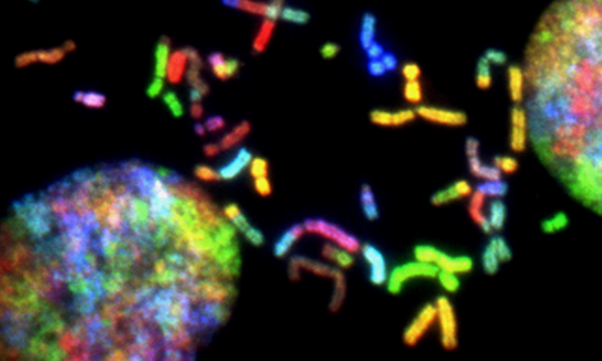

The rest of this page is dedicated to my projects on Artificial Intelligence, Statistics, Epidemiology, Forensic Science, and Drug Surveillance.
FUNDAMENTALS OF AI/ML
MovieLens Data Analysis
This project explores the most liked films by viewer ratings.
Key Items Assessed: Exploratory Data Analysis and Data Visualization using Python and Associated Libraries like Pandas, Seaborn, etc.
SUPERVISED LEARNING, MACHINE LEARNING
THERA BANK LOAN CAMPAIGN
This is an assessment on the way we can improve banking marketing strategies to target reliable clientele.
Key Items Assessed: Logistic Regression, Confusion Matrix, Predictions based on a Classification Model, Data Wrangling/Cleaning
SUPERVISED LEARNING, MACHINE LEARNING
ENSEMBLE TECHNIQUES FOR BANK MARKETING

Using multiple machine learning models, this project juxtaposes the strength of supervised learning techniques to strongly identify potential customers for the next campaign.
Key Items Assessed: Decision Tree, Bagging, Boosting, Prediction Success, Dealing with Outliers and Data Anomalies.
SUPERVISED LEARNING, FEATURE SELECTION AND MODEL TUNING
TUNING MODEL FOR CONCRETE STRENGTH
A hard look at the possibilities of strengthening concrete by using discipline specific ratios, model tuning, and feature selection for dimension reduction.
Key Items Assessed: Feature Selection, Hyperparameter Tuning, K-Fold Cross Validation, Support Vector Machine, Support Vector Regression, K Nearest Neighbors, Gradient Boost, GridSearch CV
UNSUPERVISED LEARNING, MACHINE LEARNING
CREDIT CARD GROUP SEGMENTATION
Without a target variable in hand, unsupervised learning was the proper way to approach this problem. K-Means and hierarchical clustering was employed to segment groups of promising customers and predict new customers based on similar properties.
Key Items Assessed: K-Means, Hierarchical Clustering, Silhouette Scores, Dendograms
ARTIFICIAL INTELLIGENCE, NEURAL NETWORK
NEURAL NETWORKS AS BUSINESS SOLUTIONS
Neural networks can be very powerful, especially for artificial intelligence. This is a project that explores the use of neural networks in solving business problems. It identifies the strengths and weaknesses of neural networks.
ARTIFICIAL INTELLIGENCE, COMPUTER VISION
SEEDLING IDENTIFICATION WITH COMPUTER VISION

A lot of seedlings look alike. We can use computer vision to help to classify seedlings into their respective categories by getting the computer to learn recurring patterns from image edges and applying the learned patterns to untested data.
ARTIFICIAL INTELLIGENCE, NATURAL LANGUAGE PROCESSING
SENTIMENT ANALYSIS FOR AIRLINE TWEETS
Natural language processing can be a useful tool. In this project, we comb through the Twitter Tweets to identify customer feelings about an airline's performance. This can be especially useful for improving a company's business performance.
BIOSTATISTICS, LOGISTIC REGRESSION
INSURANCE TYPE AS CAUSALITY FOR HPV VACCINE COMPLETION RATE
Looking for causality is one of the most important goals in epidemiology. Type of insurance can affect HPV vaccine completion. In this project, there are also multiple confounders that must be acknowledged and handled. Logistic regression is used in a different way than it is in artificial intelligence to better understand how insurance affects general health.
BIOSTATISTICS, POISSON REGRESSION
HOMEOWNERSHIP EFFECT ON MENTAL UNHEALTHY DAYS USING POISSON REGRESSION
Based on BRFSS data, we examine the effects of homeownership on mental health. Since the target variable is call data, we can use Poisson Regression modeling. Additionally, we also look at the application of logistic regression, negative binomial and zero-inflated negative- binomial regression models.
BIOSTATISTICS, SURVIVAL ANALYSIS
SURVIVAL ANALYSIS FOR BEST OVERALL BREAST CANCER OUTCOME

Survival analysis is useful to gage the efficacy of a treatment, methodology, or clinical factors in prolonging patient health. This project evaluates models consisting of different clinical variables of breast cancer to predict the prognosis (overall survival) of affected patients. The model will also assess if Oncotype Dx score adds any prognostic value to the model.
BIOSTATISTICS, LINEAR MIXED MODEL WITH RANDOM INTERCEPTS
MATERNAL ANXIETY LEVELS OF PEDIATRIC BONE MARROW TRANSPLANT PATIENTS
This project emphasizes on developing a mixed model that can summarize maternal anxiety levels of pediatric bone marrow patients across time. The advantage of the mixed model can display the overall distribution and detect a difference between mothers.
DRUG SURVEILLANCE EPIDEMIOLOGY, R, GGPLOT2
Port Project Figures for National Drug Surveillance
The Port Project is a collaborative project between the Center of Forensic Science Research and Education, US Customs and Border Patrol, and US Department of Justice. This project mainly informs the government of the drug composition trends that are coming into the country through our port borders. This is an ensemble of graphs that were made for the initiative.
DRUG SURVEILLANCE EPIDEMIOLOGY, R, GGPLOT2, POWER BI
NPS BENZODIAZEPINE INFLUENCE ON IMPAIRED DRIVING AND DEATHS IN PA
Novel psychoactive substances like benzodiazepines have plagued America for a long time. This is a public health infographic that displays the number of driving incidents and deaths that were influenced by benzodiazepine intake in Pennsylvania.
MISCELLANEOUS GRAPHS DONE IN R
PLOTTING DRUG COMBINATIONS FOR THE INTERNATIONAL TOXIC ADULTERANT DATABASE (ITAD)

Drug identification laboratory instruments are expensive, and not every country has the means of purchasing this equipment. The International Toxic Adulterant Database maps out the most common drug adulterant combinations in the world. This is one example from Argentina, graphed in R with UpSet Plot.